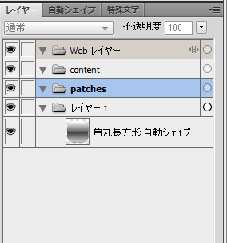
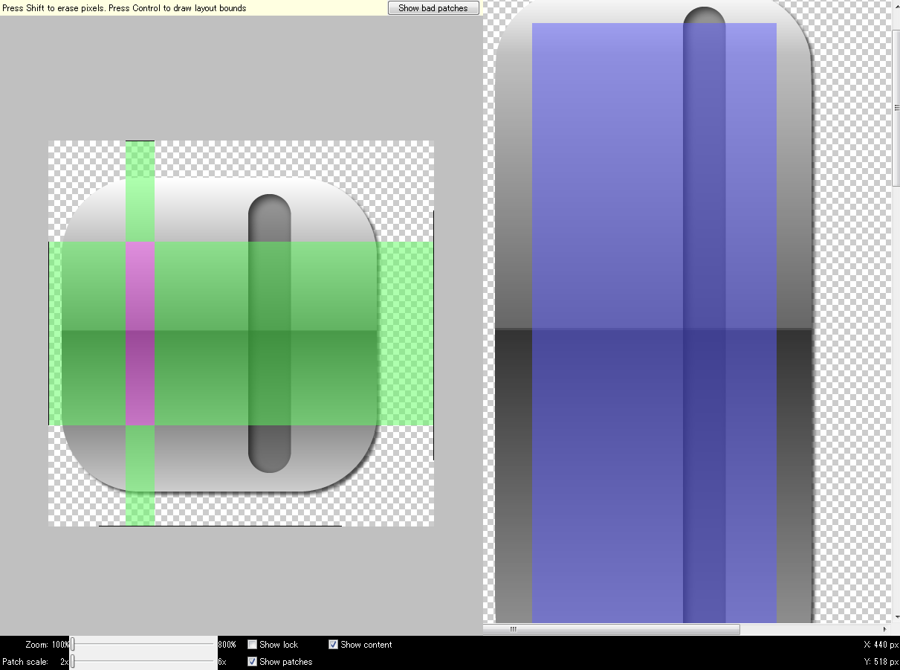

9patch2fire
概要
9patch2fireはAndroidの9patchを出力するためのFireworksスクリプトです。
動作にはAdobe Fireworks
が必要となります。
標準の9patce-toolでは困難だった複数解像度への出力、ドットの位置決め、元データを修正するたびに9patchを作り直さないと行けないといった問題を解消するためにFireworksから直接各解像度ごとの9patchを出力します。
使用方法
9patch2fireには二つのスクリプトがあります。
ready.jsfの実行
9patchを作成するドキュメントを開いた後に、ready.jsfを実行します。ready.jsfを実行するにはメニューバーよりコマンド-スクリプトを実行を選びます。

patch2fのready.jsfファイルを開きます。
新しいレイヤー contentとpatchesが追加されます。

素材の作成
Fireworks上で素材を作っていきます。この際、contentとpatchesの内容は出力されないためご注意下さい。
画像のサイズはxhdpi（1インチあたり約320ドット）で作成してください。

contentおよびpatchesの作成
コンテンツ部分を示すcontentと、引き延ばす場所を示すpatchesをそれぞれのレイヤーに配置していきます。

make.jsfの実行
9patchを作成するドキュメントを開いた後に、make.jsfを実行します。メニューバーよりコマンド-スクリプトを実行を選びます。
patch2fのmake.jsfファイルを開きます。
fireworksファイルを保存する前の場合ファイルの保存画面が表示されます。ここで指定したファイル名でファイルが作成されます。
次にファイルを出力するフォルダを指定します。

指定したフォルダの下にoutputフォルダが作成されます。
outputフォルダにはoriginalImage.pngと各解像度ごとのフォルダが作成されています。
originalImage.pngは9patchを出力する元となったFireworksのファイルです。不要な場合削除して問題有りません。
Androidのソースには含めないようにしてください。

各解像度フォルダの中にはそれぞれの解像度に応じた9patchファイルが作成されています。

ライセンス
Creative commons 3.0に基づきライセンス条件を継承の上で自由に改変、再頒布、商用利用が可能です。
また、このツールを用いて作成されたコンテンツの著作権は各コンテンツ作成者の帰属します。

お問い合わせ先
githubかfirespeed.orgにコメント下さい